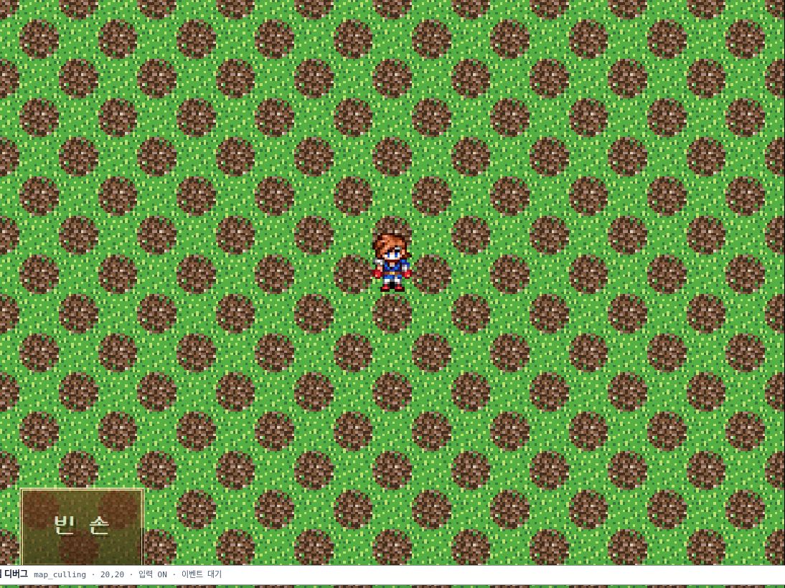
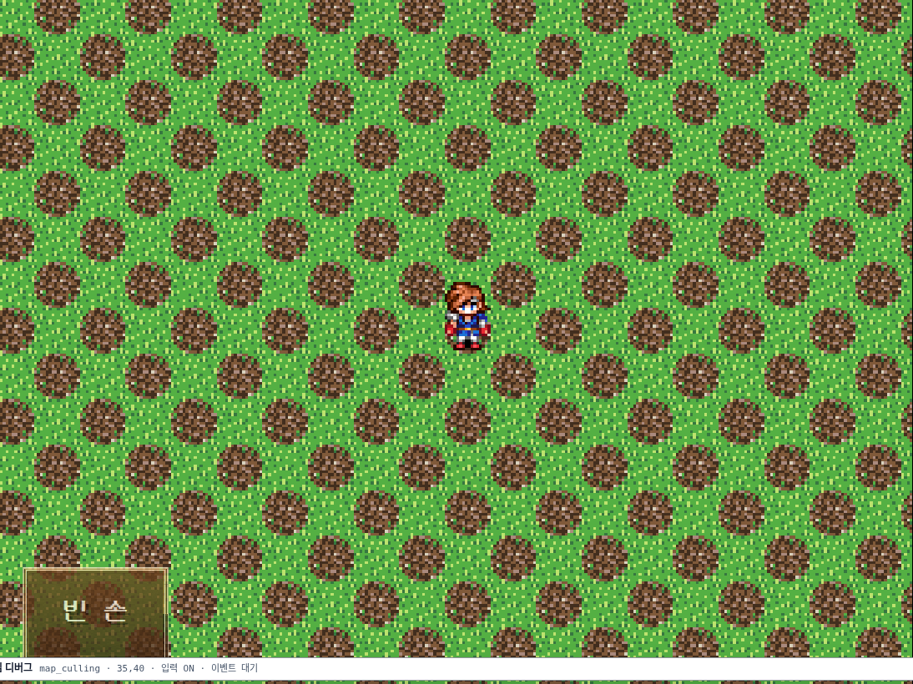
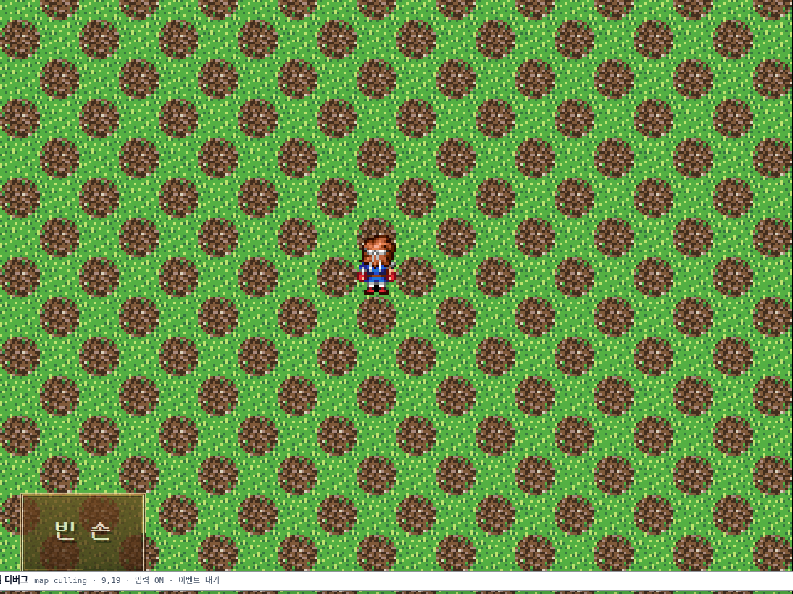
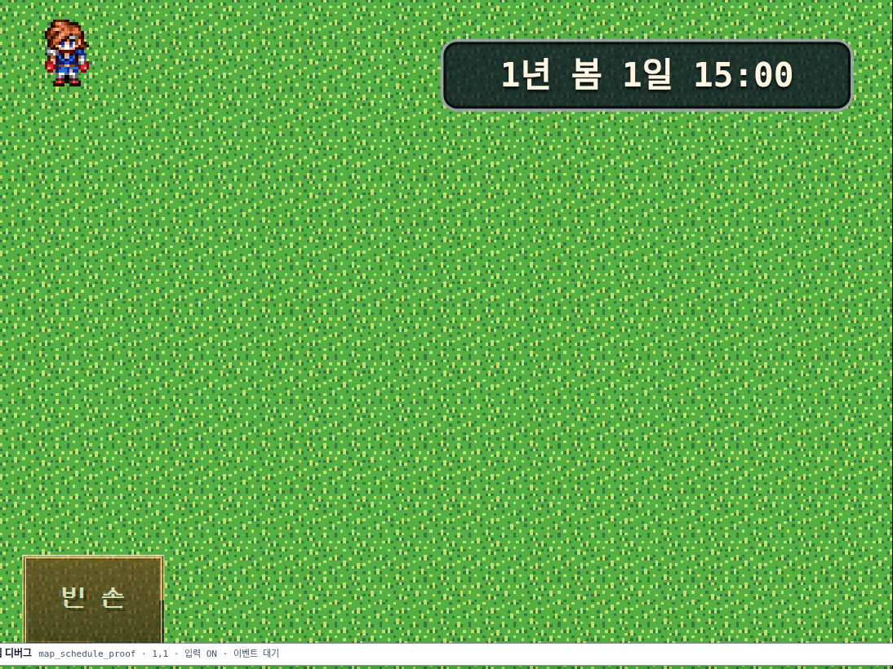

큰 맵에 NPC 를 여러 명 두면 프레임이 무너지는 문제를 계측으로 파고들었다. 결론은 렌더가 아니라 매 프레임 반복되는 전체 탐색이었다. 원인 9건을 고쳤고, 각 수치는 합병 후 두 워크트리에서 같은 벤치를 다시 돌려 얻은 값이다.
| 측정 항목 | origin/main | agent/perf | 배수 |
|---|---|---|---|
updateNpcSchedules 30 NPC — 걷는 중 매 프레임 |
27.603 ms | 0.140 ms | 197× |
| A* 도달 가능 100×100 (0,0)→(99,99) | 3.646 ms | 0.450 ms | 8.1× |
| A* 도달 불가 (벽으로 갈린 맵) | 47.609 ms | 9.219 ms | 5.2× |
| 이벤트 1개 찾기 (best of 5 × 20,000) | 14.07 µs | 9.30 µs | 1.51× |
| 차단 이벤트 판정 (best of 5 × 20,000) | 15.11 µs | 10.30 µs | 1.47× |
| 뷰 배열 전체, 맵 3개 (best of 5 × 20,000) | 14.32 µs | 9.95 µs | 1.44× |
| 시점 | 비용 | 빈도 |
|---|---|---|
trackCullableTile × 20,000 | 1.572 ms | 맵 로드당 1회 |
syncTileCulling — 타일 창이 바뀐 프레임 | 0.147 ms | 8~16 프레임마다 |
syncTileCulling — 창이 그대로인 프레임 | 0.000 ms | 그 외 전부 |
renderTiles 100×100 (참고) | 25.122 ms | 맵 로드당 1회 이전엔 시간표마다 |
updateNpcSchedules 가 프레임마다 주민 전원의 목표 경로를 다시 등록했다.
100ms 주기로 묶고(tickNpcSchedules), 이미 같은 목표로 걷는 중이면 재등록을 건너뛰고,
실패한 경로는 10틱 백오프를 둔다. 백오프 상태는 WeakMap 에 두었다 —
세션 상태에 넣으면 세이브 파일로 흘러간다.
renderTiles 로 맵 전체 GameObject(1만~2.1만개, 25.1ms)를
파괴하고 다시 만들었다. 갱신이 필요한 것은 이벤트 계층뿐이라 refreshRuntimeEntities 를
새로 두고 그쪽을 부른다.
chasePathBlocked 로 표시해 재탐색 주기를 기다리게 한다. 경로가 소진돼서
빈 경우는 표시가 없으므로 예전처럼 즉시 재탐색한다 — 추격 반응성은 그대로다.
배열을 우선순위 큐로 쓰며 while 반복마다 sort()(O(n log n))를 돌리고
개선된 노드를 findIndex()(O(n))로 훑었다. 문자열 키 "x,y" 도 반복마다
새로 만들었다. 이진 최소힙 + 정수 키(y*width+x) + 지연 삭제로 바꿨다.
f → h → order 의 order 는
키마다 유일하므로 open 안에서 전순서다. 즉 정렬 후 shift 와 힙 pop 이 같은 노드를 뽑는다.
decrease-key 는 지연 삭제로 대체했다 — 개선 노드는 g 가 반드시 더 작아 f 도 작으므로 낡은 항목보다
먼저 나오고, 낡은 항목은 pop 시점에 nodes 최신본과 다르다는 것으로 걸러진다.
맵 경계 396칸을 후보로 각각 A* 를 돌리던 최근접 탐색(150ms/프레임)은 너비 우선 1회
(nearestReachableCandidate)로 바꿨다. 한 칸 비용이 1 이므로 BFS 깊이가 곧 최단 거리다.
동률 규칙(candidates 배열에서 앞선 것)까지 예전 안정 정렬과 같고, accept 판정은
실제로 닿은 후보에만 돌려 396칸 전수 검사를 없앴다.
runtimeEventViewsForMap(...).find/some 이 질의마다 모든 맵을 훑어
전체 배열과 Set 3종을 새로 만들었다. NPC 한 명이 한 걸음 옮길 때 대각 판정으로 최대 3회 불린다.
지연 순회 forEachRuntimeEventView 하나로 모으고, 찾기 질의는 첫 일치에서 멈춘다.
다른 맵 순회는 실제로 옮겨진 이벤트가 있을 때만 한다 — 맵이 하나뿐인 프로젝트는 값을 치르지 않는다.
Phaser Container 와 root display list 에는 프러스텀 컬링이 없다.
cull() 호출부는 TilemapLayer{WebGL,Canvas}Renderer 뿐이고 이 프로젝트는
Tilemap 을 쓰지 않는다. 그래서 320×240 화면에 1만~2.1만개 타일이 매 프레임 전부 드로우된다.
카메라 창 밖 타일의 visible 을 끄는 playSceneTileCulling.ts 를 추가했다.
tileLayer 안에서는 농지·설치물 오버레이와 root y-sort 가구가 depth 로 서로 끼어들기 때문에
청킹하면 그리는 순서가 바뀐다. 개별 visible 토글은 depth 규칙을 건드리지 않는다.
textContent 를 다시 썼다.
노드를 캐시하고 직렬화 결과가 같으면 쓰지 않는다. .runtime-state-json 에
content-visibility: hidden 을 걸어 레이아웃 비용을 없앴다 — 1×1 박스는 남아
Playwright toBeVisible() 과 textContent 가 그대로 동작한다.
store.subscribe 가 칸을 칠할 때마다 툴바 전체를
다시 그렸고 거기에 projectLint(141~1206ms)가 딸려 왔다. 120ms 트레일링 디바운스.
tileStackAt/topTileInStack 이
읽는 중에 clearTileStack 을 불러 작성된 스택을 지웠다. 렌더 경로가 살아 있는
store 맵을 넘기므로 한 번 그리면 작성된 lowerTileStacks/upperTileStacks 가
undo·자동저장 밖에서 조용히 사라졌다. 읽기를 순수하게 만들었다.
jsdom 테스트는 픽셀을 만들지 않으므로 컬링이 화면을 갉아먹어도 통과한다. 실제 캔버스를 찍어 확인했다.
getImageData 가 아닌가: WebGL 캔버스는
preserveDrawingBuffer 없이 합성 뒤 버퍼가 비므로 drawImage → getImageData 가
전부 투명 검정으로 읽힌다(실측 어두운 비율 1.0). Playwright 스크린샷 PNG 를 pngjs 로
디코딩해 측정한다. 캔버스는 레터박스(좌우 검은 띠)로 감싸여 있어 전체를 재면 정상 화면도 15% 넘게
검으므로, 지도 내용이 확실한 가운데 60%만 본다. 임계값 2%.




data-map-x/y 가 (12,9) 에 도달하고
__oprnDebug.readState().npcActivities.villager 가 "work" 로 배정된다.
묶음이 걸음을 막지 않는다.
| 게이트 | origin/main | agent/perf | 판정 |
|---|---|---|---|
tsc --noEmit -p tsconfig.app.json |
0건 | 0건 | 통과 |
| 전체 vitest — 실패 파일 수 | 93 / 1164 | 97 / 1166 | 동률 |
| CSS 예산 (회귀 / 개선) | — | 0 / 1 | 통과 |
| CSS 그래프 신규 | — | 0건 | 통과 |
check-file-loc.mjs FAIL 집합 |
26개 | 26개 | 완전 동일 |
브라우저 증거 (--workers=1) |
— | 2 / 2 | 통과 |
전체 실행에서 이 브랜치만 실패한 10개 파일은 전부
Test timed out in 15000ms 였다. 격리 실행하면 10개 파일 52개 테스트가 모두 통과한다.
전체 실행 시간 차이(1000s vs 419s)가 곧 부하 차이다 — 워크트리는 node_modules 를
공유하고 두 실행의 머신 부하가 달랐다. 반대로 origin/main 만 실패한 6개는 이 브랜치에서
통과한다. 실제 회귀 0건.
# 이 브랜치만 실패했던 10개 파일 — 격리 실행
Test Files 10 passed (10)
Tests 52 passed (52)
Errors 1 error ← mapEditLockScratchSession 의 jsdom Response 잡음.
origin/main 에서 같은 파일을 격리 실행해도 동일하게 나온다(기존 잡음).| 파일 | origin/main | agent/perf | 비고 |
|---|---|---|---|
| src/player/playSceneMapRuntime.ts | 523 | 565 | 이미 WARN |
| src/player/PlayScene.ts | 599 | 607 | 이미 WARN |
| src/player/runtimeDom.ts | 571 | 607 | 이미 WARN |
| src/player/chaseAi.ts | 281 | 407 | WARN 아래 |
| src/project/runtimeEventState.ts | 326 | 415 | WARN 아래 |
| src/player/playSceneTileCulling.ts | — | 121 | 신규 |
| 파일 | 개수 | 덮는 것 |
|---|---|---|
| test/runtimePerfHotPaths.test.ts | 19 | A* 경로 동일성(열린 맵·벽 우회·갈린 맵·범위 밖), BFS 최근접과 동률 규칙,
accept 가 닿은 후보에만 불리는지, 추격 재탐색 스로틀과 chasePathBlocked 해제,
시간표 틱 스로틀(음수 delta 포함), runtimeEventViewById 동등성,
tileStackAt 순수성 |
| test/playSceneTileCulling.test.ts | 7 | 여백 포함 화면 밖 숨김, 창이 같으면 쓰지 않음, 카메라가 멀어지면 다시 숨김,
setVisible 없는 스텁은 추적 제외, 망가진 뷰포트는 무동작,
resetCullableTiles 가 목록과 창을 함께 버림, renderTiles 로 만든 타일도 컬링됨 |
| test/e2e/tile-culling-runtime.spec.ts | 1 | 브라우저 픽셀 — 걷기 전·후·복귀 모두 화면 가운데 빈 영역 없음 |
| test/e2e/npc-schedule-throttle-runtime.spec.ts | 1 | 브라우저 — 묶은 뒤에도 주민이 목표 칸에 도달하고 활동이 배정됨 |
작업 중 origin/main 이 52 커밋 앞서 있었다. 합쳤고 충돌 4건을 해소했다
(chaseAi, playSceneAutonomousMapActions, playSceneMapRuntime,
runtimeEventState). 상류가 도입한 몸 사각 / 통행 사각
(bodyRect / passRect, ChasePassSize) 모델을 유지하면서
성능 수정을 그 위에 얹었다.
canMove → chasePassable. 힙·정수 키·closed 선행 검사는 유지.passageBounds 사각을 지연 순회에 넘긴다. 조사·접촉은 bodyRect, 통행 차단은 passRect.moverPassSize: 전체 배열 + find → runtimeEventViewById.renderTiles 정리: clearEventSprites 로 모으고 상류가 추가한 destroyAllCharacterShadows 를 그 안에 넣었다 — renderEventLayer 도 같은 정리를 타므로 고아 그림자가 남지 않는다.scratch/(gitignore)에 있고 커밋되지 않는다.isCharacterBlockedRect 의 플레이어 쪽은 아직 점이다.